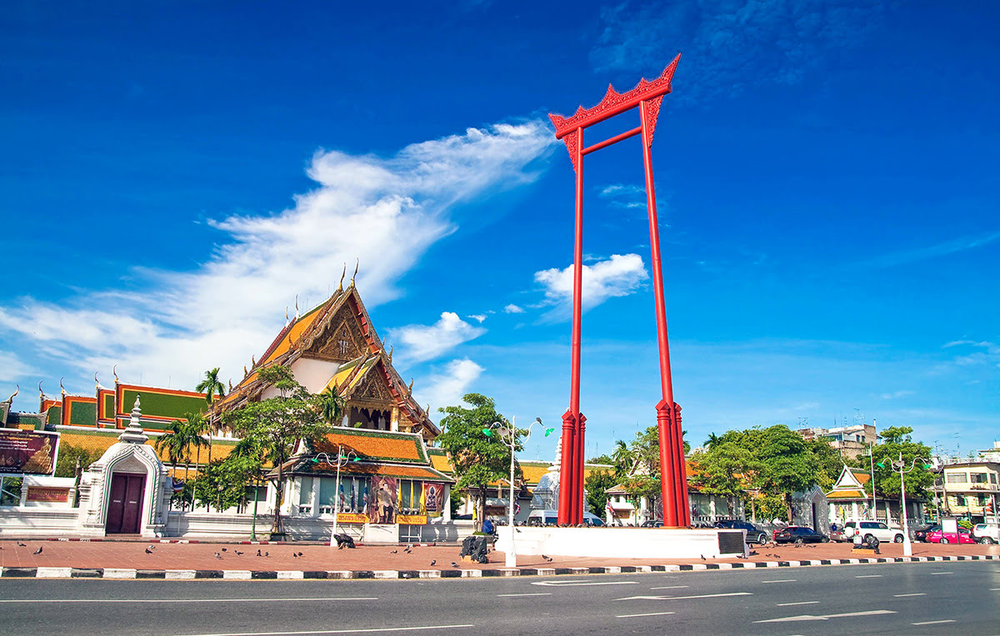

|
กรุงเทพมหานคร เป็นเมืองหลวง นครและมหานครที่มีประชากรมากที่สุดของประเทศไทย เป็นศูนย์กลางการปกครอง การศึกษา การคมนาคมขนส่ง การเงินการธนาคาร การพาณิชย์ การสื่อสาร และความเจริญของประเทศ ตั้งอยู่บนสามเหลี่ยมปากแม่น้ำเจ้าพระยา มีแม่น้ำเจ้าพระยาไหลผ่านและแบ่งเมืองออกเป็น 2 ฝั่ง คือ ฝั่งพระนครและฝั่งธนบุรี กรุงเทพมหานครมีพื้นที่ทั้งหมด 1,568.737 ตร.กม. มีประชากรตามทะเบียนราษฎรราว 8 ล้านคน |
 |
กรุงเทพมหานครเป็นเมืองที่มีตึกระฟ้ามากที่สุดเป็นอันดับที่ 11 ของโลกในปี พ.ศ. 2563[4] มีสถานที่ท่องเที่ยวหลากหลายในหลายรูปแบบทั้งด้านศาสนา ด้านศิลปวัฒนธรรม เช่น พระบรมมหาราชวัง ด้านการจับจ่ายซื้อของ ศูนย์การค้าต่าง ๆ หรือสถานบริการกลางคืน เช่น สยามสแควร์ ถนนข้าวสาร ที่ดึงดูดนักท่องเที่ยวต่างชาติได้อย่างมากมาย โดยในปี พ.ศ. 2562 นิตยสารฟอบส์ นิตยสารเกี่ยวกับธุรกิจและการเงินชื่อดังสัญชาติอเมริกา ได้จัดอันดับกรุงเทพมหานครเป็นเมืองที่มีนักท่องเที่ยวต่างชาติมากเป็นลำดับที่ 1 ของโลก โดยมีนักเดินทางเข้ามากว่า 22.78 ล้านคนและทำรายได้จากนักท่องเที่ยวต่างชาติมากกว่า 2,003 ล้านดอลลาร์สหรัฐ มากเป็นลำดับที่ 3 ของโลก รองจากดูไบและมักกะฮ์ตามลำดับ |
|  |
กรุงเทพมหานครเป็นองค์กรปกครองส่วนท้องถิ่นรูปแบบพิเศษของประเทศไทย มิได้มีสถานะเป็นจังหวัด คำว่า "กรุงเทพมหานคร" นั้นยังใช้เรียกองค์กรปกครองส่วนท้องถิ่นของกรุงเทพมหานครอีกด้วย มีโครงสร้างประกอบด้วยสภากรุงเทพมหานครและผู้ว่าราชการกรุงเทพมหานคร กรุงเทพมหานครมีการเลือกตั้งผู้บริหารท้องถิ่นโดยตรง |